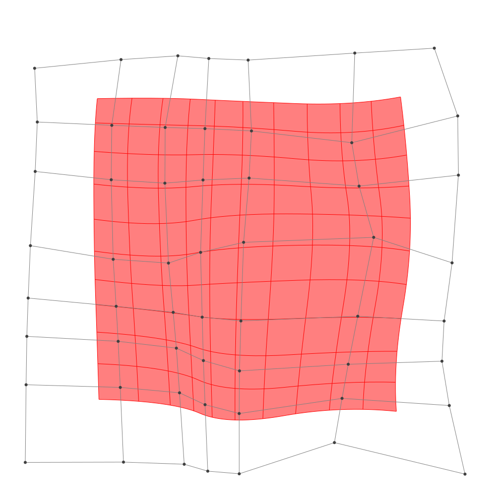
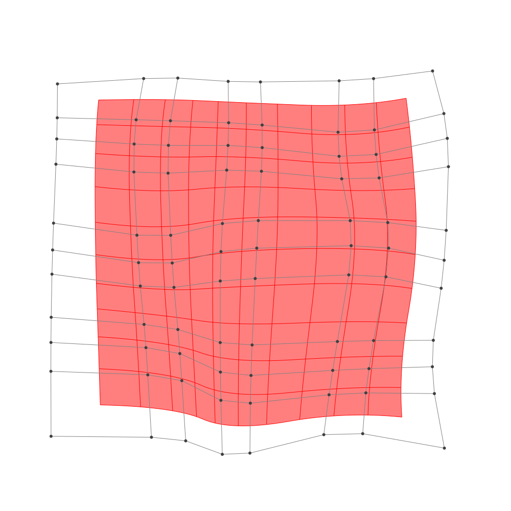

Refinement
BasicBSpline.refinement — FunctionRefinement of B-spline manifold with given B-spline spaces.
julia> p = 2 # degree of polynomial2julia> k = KnotVector(1:8) # knot vectorKnotVector([1.0, 2.0, 3.0, 4.0, 5.0, 6.0, 7.0, 8.0])julia> P = BSplineSpace{p}(k) # B-spline spaceBSplineSpace{2, Float64}(KnotVector([1.0, 2.0, 3.0, 4.0, 5.0, 6.0, 7.0, 8.0]))julia> rand_a = [SVector(rand(), rand()) for i in 1:dim(P), j in 1:dim(P)]5×5 Matrix{StaticArrays.SVector{2, Float64}}: [0.00106818, 0.325087] [0.0286745, 0.893041] … [0.186893, 0.145313] [0.999533, 0.334508] [0.821766, 0.751503] [0.824409, 0.410373] [0.0370094, 0.0304289] [0.0064186, 0.0825077] [0.188197, 0.29229] [0.135114, 0.718122] [0.387479, 0.181152] [0.539269, 0.447061] [0.726034, 0.0928337] [0.206263, 0.36095] [0.117445, 0.544214]julia> a = [SVector(2*i-6.5, 2*j-6.5) for i in 1:dim(P), j in 1:dim(P)] + rand_a # random5×5 Matrix{StaticArrays.SVector{2, Float64}}: [-4.49893, -4.17491] [-4.47133, -1.60696] … [-4.31311, 3.64531] [-1.50047, -4.16549] [-1.67823, -1.7485] [-1.67559, 3.91037] [-0.462991, -4.46957] [-0.493581, -2.41749] [-0.311803, 3.79229] [1.63511, -3.78188] [1.88748, -2.31885] [2.03927, 3.94706] [4.22603, -4.40717] [3.70626, -2.13905] [3.61745, 4.04421]julia> M = BSplineManifold(a,(P,P)) # Define B-spline manifoldBSplineManifold{2, (2, 2), StaticArrays.SVector{2, Float64}, Tuple{BSplineSpace{2, Float64}, BSplineSpace{2, Float64}}}((BSplineSpace{2, Float64}(KnotVector([1.0, 2.0, 3.0, 4.0, 5.0, 6.0, 7.0, 8.0])), BSplineSpace{2, Float64}(KnotVector([1.0, 2.0, 3.0, 4.0, 5.0, 6.0, 7.0, 8.0]))), StaticArrays.SVector{2, Float64}[[-4.498931822716076, -4.174913459116878] [-4.471325482005789, -1.60695918403908] … [-4.250618729024631, 2.3909352918965503] [-4.313106612701368, 3.645313338168175]; [-1.5004666016504697, -4.165492285022681] [-1.6782338875919283, -1.748496572216891] … [-2.0406423904137374, 2.2255496350137696] [-1.6755911686989022, 3.9103726511508556]; … ; [1.635113730876289, -3.7818781345688484] [1.8874788718228697, -2.3188477857027547] … [1.9690452303556516, 1.8545484513830628] [2.0392692611853005, 3.947060542894247]; [4.22603379278947, -4.4071663486920905] [3.7062631555124774, -2.1390498576676142] … [4.163357082140673, 2.4622054414243344] [3.617445345546, 4.044214016313564]])
h-refinemnet
Insert additional knots to knot vector.
julia> k₊=(KnotVector(3.3,4.2),KnotVector(3.8,3.2,5.3)) # additional knotvectors(KnotVector([3.3, 4.2]), KnotVector([3.2, 3.8, 5.3]))julia> M_h = refinement(M,k₊=k₊) # refinement of B-spline manifoldBSplineManifold{2, (2, 2), StaticArrays.SVector{2, Float64}, Tuple{BSplineSpace{2, Float64}, BSplineSpace{2, Float64}}}((BSplineSpace{2, Float64}(KnotVector([1.0, 2.0, 3.0, 3.3, 4.0, 4.2, 5.0, 6.0, 7.0, 8.0])), BSplineSpace{2, Float64}(KnotVector([1.0, 2.0, 3.0, 3.2, 3.8, 4.0, 5.0, 5.3, 6.0, 7.0, 8.0]))), StaticArrays.SVector{2, Float64}[[-4.498931822716076, -4.174913459116878] [-4.482368018289904, -2.6341408940701987] … [-4.259991911576142, 2.579091998837294] [-4.313106612701368, 3.645313338168175]; [-2.5499294290234324, -4.168789695955651] [-2.613461338991441, -2.686890970195054] … [-2.7818222287033825, 2.5135597064253687] [-2.5987215740997653, 3.8176018916069174]; … ; [1.635113730876289, -3.7818781345688484] [1.7865328154442375, -2.904059925249192] … [1.979578834980099, 2.1684252651097404] [2.0392692611853005, 3.947060542894247]; [4.22603379278947, -4.4071663486920905] [3.914171410423274, -3.0462964540774045] … [4.081470321651472, 2.6995067276577185] [3.617445345546, 4.044214016313564]])julia> save_png("2dim_h-refinement.png", M_h) # save image

Note that this shape and the last shape are identical.
p-refinemnet
Increase the polynomial degree of B-spline manifold.
julia> p₊=(1,2) # additional degrees(1, 2)julia> M_p = refinement(M,p₊=p₊) # refinement of B-spline manifoldBSplineManifold{2, (3, 4), StaticArrays.SVector{2, Float64}, Tuple{BSplineSpace{3, Float64}, BSplineSpace{4, Float64}}}((BSplineSpace{3, Float64}(KnotVector([1.0, 2.0, 3.0, 3.0, 4.0, 4.0, 5.0, 5.0, 6.0, 6.0, 7.0, 8.0])), BSplineSpace{4, Float64}(KnotVector([1.0, 2.0, 3.0, 3.0, 3.0, 4.0, 4.0, 4.0, 5.0, 5.0, 5.0, 6.0, 6.0, 6.0, 7.0, 8.0]))), StaticArrays.SVector{2, Float64}[[-4.000843268471392, -3.5376446347597295] [-4.004154567003894, -2.2662473774101644] … [-3.880097180784017, 2.694900734395054] [-3.8757128638397553, 3.357960171686322]; [-2.036095392202946, -3.5565236124089328] [-2.10786456628603, -2.3354458758167036] … [-2.3355231041448263, 2.6563844581174436] [-2.18862575207004, 3.4629255520305313]; … ; [2.0978527023391487, -3.4867899937829328] [2.1596906246271415, -2.688184307503354] … [2.326647556384554, 2.457681659408489] [2.3104149245140184, 3.4613957454455853]; [3.6964434472440075, -3.769467779505364] [3.5009027767908085, -2.702500045839658] … [3.686832829670515, 2.7777023999990114] [3.4652216086585383, 3.611248647162123]])julia> save_png("2dim_p-refinement.png", M_p) # save image

Note that this shape and the last shape are identical.